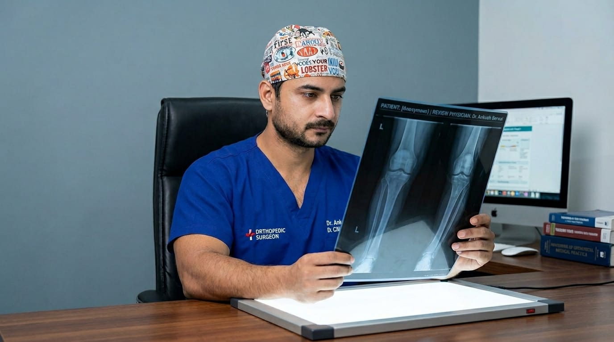
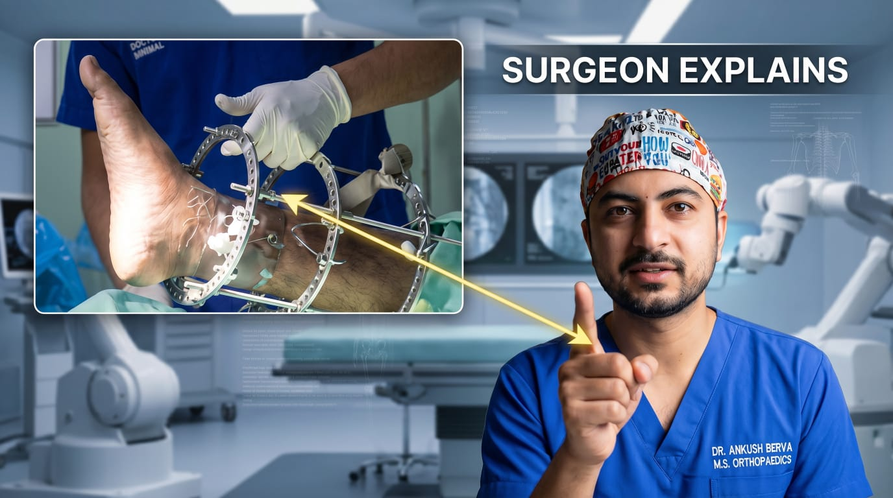
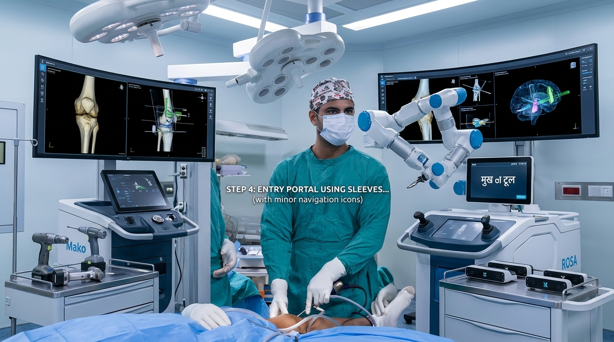

X-ray imaging is a fast and essential diagnostic tool used by our orthopedic team to evaluate bones and joints. It helps in detecting fractures, dislocations, joint alignment issues, and arthritis conditions with accuracy.
At Vardaan Hospital, we offer comprehensive orthopedic care with modern facilities for accurate diagnosis and effective treatment. Our services include fracture management, joint pain treatment, sports injury care, and post-surgical rehabilitation.

We provide advanced treatment for complex fractures using modern fixation techniques, ensuring precise alignment and faster recovery.
Our specialists use external fixation systems for severe bone injuries, open fractures, and trauma cases, allowing stability while minimizing damage to surrounding tissues.
With a focus on accuracy and patient safety, we ensure proper bone healing, reduced complications, and a quicker return to daily activities.
CISRF Interlocking is an advanced orthopedic surgical procedure used to treat long bone fractures such as the femur (thigh bone), tibia (leg bone), and humerus (arm bone). This technique involves inserting a strong metal rod (nail) inside the bone canal to stabilize and align the fractured bone.
The “interlocking” system uses special screws at both ends of the rod to hold the bone firmly in place, ensuring proper healing and preventing movement at the fracture site.
Conditions Treated: Road accident fractures, complex long bone fractures, non-healing (non-union) fractures, and multiple bone injuries.

ACL (Anterior Cruciate Ligament) is one of the major ligaments of the knee that helps maintain stability and control during movement. ACL injuries are very common, especially during sports activities, sudden twisting, or road accidents.
Symptoms: Sudden "pop" sound, severe pain and swelling, instability while walking, feeling of the knee "giving way."
Treatment: Our specialists perform advanced arthroscopic (minimally invasive) reconstruction, replacing the torn ligament with a graft to ensure precision and faster recovery.
Expert care delivered by our highly ranked surgical team.
MBBS from PGIMS Rohtak, M.S. Orthopaedics from MAMC Agroha. NEET SS Rank 37. Specialist in joint replacement, arthroscopy, spine & trauma surgery at VARDAAN Hospital, Jind.